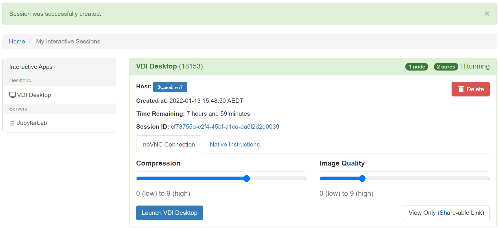
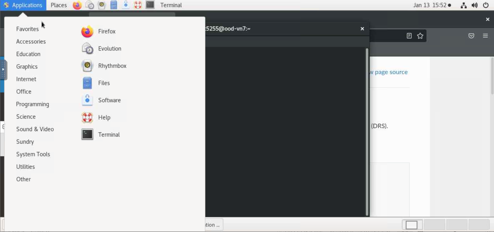

Computing Platforms
Contents
Computing Platforms¶
In Australia, there is a vast quantity of climate and related datasets hosted at the National Computational Infrastructure (NCI) High Performance Computing (HPC) facility located at the Australian National University in Canberra. As such, much of our documentation assumes use of this system, but this page covers a few options and notes about various systems people might work on.
The datasets hosted on NCI may be centrally managed, e.g. by NCI (CMIP, ERA5) or the community (precipitation data, other reanalyses). An interface to help researchers identify what climate data is available and where is under development.
NCI Gadi HPC¶
The NCI’s peak system “Gadi” is a large high performance computer ideal for numerical modelling and computationally intensive jobs. This HPC supports the ACCESS climate model that contributes to CMIP submissions as well as development by ACCESS staff at BoM, CSIRO and university collaborators. NCI’s Gadi system is also used to run regional models such as WRF and CCAM, as well as many field-specific models (CABLE, WaveWatchIII, AWRA to name a few).
The HPC is accessed via the command line and does not have a graphical user interface. Tasks are described in “job scripts” which are submitted to a batch queuing system to ensure fair use of the resources. No internet access is available from Gadi compute nodes, so all downloads/repository cloning needs to be done on login nodes.
NCI provides:
a
/homedirectory for each user where code can be stored (but typically not data),a
/scratcharea for each project which is a highly performant filesystem appropriate for IO intensive jobs,a
/g/dataglobal filesystem space for most projects for longer term storage of data such as for sharing and publication,the
MDSSmass datastore facility for data archiving/backup.help via help@nci.org.au as well as specialised climate support from CLEX, BoM and CSIRO support staff via cws-help@nci.org.au.
When would I use this system?¶
Gadi is intended for large scale modelling and data processing jobs. If you are running parallel numerical models at scale then you would likely work exclusively on Gadi or a similar system. It is also useful for “high throughput computing” like AI/ML workflows, and “high performance data” parallel data processing using Pangeo tools like python’s
dasklibrary - though usually you would start exploratory data work on the NCI’s OOD (see below) and only move to Gadi when greater scalability is required.NCI is an ideal platform to use when collaborating with peers from other institutions as it is available to all Australian researchers.
If you are wanting to use large reference climate datasets as input for your research, chances are the data you want may already be available at NCI, which saves you time downloading and managing the datasets, and it is more efficient for everyone to use these centralised collections.
How do I get access?¶
Sign up for an account at my.nci.org.au. You need to join an existing computational project - talk to your supervisors or colleagues for suggested project codes. As well as joining at least one “compute” project, once access is granted you will also need to use the same portal to request access to “data” projects for the data you need to work with, for example, oi10 for replicated CMIP6 data, or hh5 for the CLEX-run community conda environments.
To log on, in a terminal type
ssh <username>@gadi.nci.org.au.
For further information, see the Gadi user guide.
NCI OOD virtual desktop¶
The NCI also support a virtual desktop infrastructure (VDI) called “Open, On-Demand” (OOD) hosted on their internal cloud infrastructure, and which provides an interface to the HPC infrastructure. The current generation of the VDI is web-based, offering a virtual desktop service mimicking the older ‘Strudel’ interface, and a Jupyter Notebook server. Documentation can be found here.
The OOD VDI service is accessed via a cloud launcher page which creates an image with access to the requested compute resources and looks like this: 
Launching the VDI desktop via the button gives access to a familiar linux graphical interface with a terminal, browser and various applications. 
When would I use the OOD VDI?¶
The “OOD” or “VDI” is ideal for exploratory and interactive work such as code development, data exploration and visualisation, and tasks requiring internet access (e.g. working with data from external sources via OPeNDAP or S3).
As with Gadi, the OOD VDI has access to all the climate data stored at NCI*, so it is an ideal place to work when large scale input data is required (as this minimises effort and risk associated with creating copies of input data).
*Note that the VDI shares only the /g/data filesystems with Gadi, data on other Gadi filesystems is not visible on the VDI and the two systems do not share a common /home directory.
How do I get access?¶
Same as Gadi (see above).
Pangeo¶
Pangeo is a community of people built around big data geoscience, and supports many aspects related to big data in the geosciences, including (but not limited to):
the use and development of python tools like
jupyter,xarrayanddask.a software environment that includes core libraries used by the Pangeo community (aka the “Pangeo Stack”). A current list of packages in the Pangeo environment can be found here under “Pangeo-notebook>conda list”.
educational resources to learn more about the software and infrastructure Pangeo uses, including a gallery of example coding use cases, as well as a Pangeo-specific Jupyter Binder in which users can spin up their own notebooks to interact with data in the cloud.
hosting collections of selected datasets publicly in commercial cloud (Pangeo Data Catalog).
cloud computing services (Pangeo Cloud).
For more information, see the Pangeo website. To get involved in the community, you can post on the Pangeo Discourse Forum or attend Pangeo community meetings. The Pangeo Oceania group meets monthly at Australian-friendly times: 3rd Friday of the month at 1pm Australian Eastern Time. All are welcome and meeting agendas and connection details are posted here.
When would I use Pangeo?¶
If you use any of the tools like xarray or dask, then you are already “using” Pangeo.
Pangeo Cloud can be used for any Earth-related research you undertake. It would be especially useful if you want to analyze across many datasets that are already stored in the Pangeo Cloud. Additionally, as a cloud computing service, it allows users to scale up computations very easily and on-demand, making it especially useful for data analysis on very large datasets. Pangeo Cloud is not currently optimized for running models, but rather for data analysis.
How do I get access?¶
Anyone can request access to Pangeo Cloud on the Pangeo Cloud documentation site, under “Sign Up”. This will take you to a Google form where you can fill in details of the research you would like to use Pangeo Cloud for, and after submission you should hear back within a few days if your request was approved. At this time, most projects related to climate and geoscience get approved. The link above also contains other pertinent information to using Pangeo Cloud. Note that the Pangeo Cloud is currently being run with limited funds, and should therefore not be used as a reliable computing platform for long-term projects, as funding could run out at any time. However, if you have funding and are able to pay for cloud computing resources, you can request your own Pangeo-like cloud environment from 2i2c - the same company that runs and maintains the Pangeo Cloud.
Pawsey HPC¶
There are a number of academic HPC systems in Australia outside of those hosted by specific institutions. Pawsey in WA hosts a peak HPC machine, local cloud, and data storage. Pawsey is a facility managed by CSIRO. Access to large scale compute quotas is available through the National Computaitonal Merit Allocation Scheme (NCMAS) as with Gadi, as well as a separate Pawsey allocation process which can be accessed more frequently. Currently only limited climate work is being done on the Pawsey peak system but this is likely to increase in the future.
When would I use this system?¶
When you need large scale HPC facilities and do not have a dependency on shared reference data, e.g. when running a large scale numeric model and forcing data is either relatively small in size or available online.
How do I get access?¶
Director’s share applications for limited resources to test the system can be made at any time, and Merit Allocations are available via a competitive process twice a year. See the support documentation for further information.
CSIRO facilities¶
CSIRO researchers have access to internal HPC facilities. The current generation are known as “Petrichor” (peak HPC) and Bracewell (GPU-enabled cluster). There is also a Bowen research cloud (storage and compute), as well as the Digital Workbench (internal cloud-based infrastructure particularly targetting Machine Learning applications), and Cloud Right programme for accessing public cloud (AWS, GCP, Azure).
When collaborating with researchers from other institutions, it is more likely that CSIRO staff will work on NCI or similar shared systems, however for internal work and data delivery CSIRO systems are often used.
Of note on Petrichor/Bracewell,
when accessing data,
/datastoreis the tape archive (similar to NCI’s MDSS), it operates as a filesystem and was the home area on the previous Ruby system. Data in this area may be slow to access anddmcommands should be used - see inernal documentation for futher details.Disk-based storage is provided via the
/scratchfilesystems (of which there are currently two), which is regularly purged and cannot be used for longterm storage,/datasetscontains mounts of Bowen cloud storage to the HPC - this is disk-based storage which is faster than datastore but slower than scratch, so not ideal for running models but good for persistent storage of model output datasets./homeis shared across CSIRO HPC systems but cloud machines typically have their own /home area.
When would I use this sytem?¶
When working only with other CSIRO researchers and/or when publishing data to CSIRO’s Data Access Portal (DAP) which is >10TB.
How do I get access?¶
Access is available to CSIRO staff via the Scientific Computing platform.
BoM facilities¶
The Australian Bureau of Meteorology run an internal HPC “Australis” for operational forecasting, however research and collaboration is mostly carried out on the NCI system.
Personal computer¶
For some researchers, the computational power of their own laptop may be sufficient for much of their work. Online access to data via cloud resources or online data access protocols (e.g. OPeNDAP) means that in some cases, direct access to HPC facilities may not be required. See the Tools page and other parts of this book for advice on working with large scale data using tools like Anaconda and Jupyter notebooks.
When would I use this approach?¶
When working alone without need to collaborate directly on the filesystem (i.e. collaboration only via Github etc.) and not dependent on large datasets hosted at NCI (other than subsets which can be accessed via OPeNDAP).